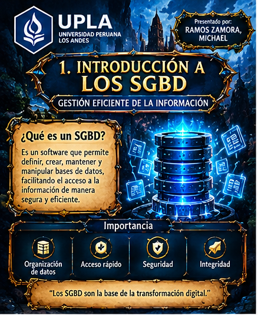
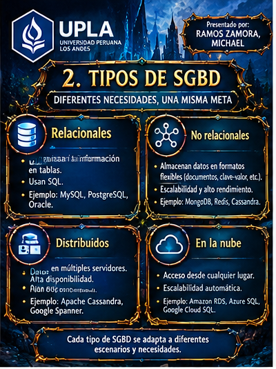
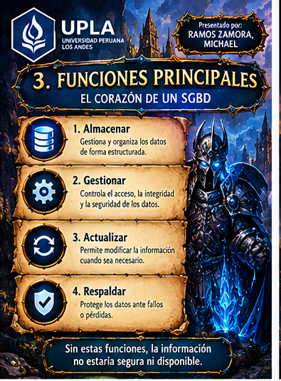
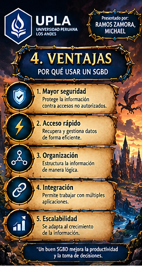
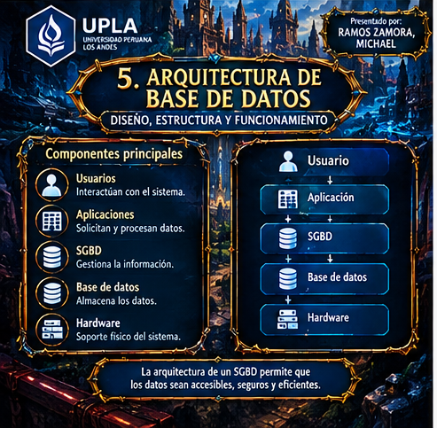
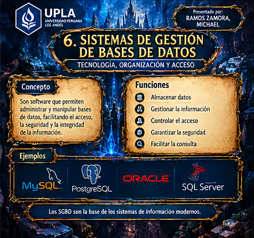

01

Estructurar e implementar los esquemas y las tablas maestras dentro del DBMS, configurando las restricciones necesarias para que el almacenamiento y la integración de datos masivos sean eficientes.
Material visual elaborado para la Semana 3. Cada infografía se muestra por separado para facilitar su lectura.






Una tarjeta por base de datos, con su diagrama en PDF y su script SQL.
Diagrama de la base de datos académica y su script SQL corregido.
Diagrama de relaciones y script SQL completo de la editorial.
Diagrama de relaciones y script SQL de la empresa de equipos y componentes.